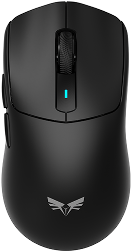

The DPI indicator shows the colour of the active stage.
The mouse sleeps after the selected idle time. Move wake-up brings it back as soon as it is moved.
Clear clears the editor only. Restore Key Binding removes the macro from the mouse and restores the button's default action.
Images are resized to 1920 px and stored in this browser only. They are never uploaded anywhere.
If the device reports a different vendor id than the descriptor
claims, pair it by the id Windows shows
(Get-PnpDevice -Class HIDClass). Leave the product id
empty to match any product from that vendor.
—
The picker lists every interface of the brand. Chrome grants one
interface per pairing, so if this one has no vendor usage page
(0xFF00 and up), pick a different row with
Try Another Interface. Still nothing? Use
Scan Any Vendor HID.
The vendor collection on this receiver is interface 2,
usage page 0xFF01 / usage 0x0010. The mouse,
keyboard and consumer-control collections either have no output
report or never answer the 0x10 read — picking one of
those gives Failed to write the report.